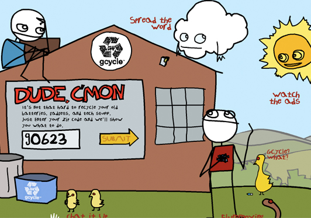

G4 TV
G4 TV asked us to come up with an Earth Day campaign that raised electronic recycling awareness. We collaborated with Sam Brown from explodingdog.com and created the G-cycle campaign featuring two TV spots along with an interactive website that directed people to e-recycling centers near them. The key was to create a tone that was non-preachy but compelling and humorous to G4 TV fans. Dude, c’mon. Just recycle your electronics.

The interactive website helped people easily find their nearest e-cycling locations along with providing interesting facts about our e-waste. Users could also click around to see random funny animations.